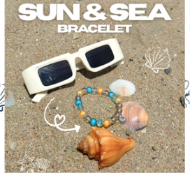
The Sun & Sea Bracelet
R30
A combination of the two elements which represent summer and make it whole. The sun and the sea.

R30
A combination of the two elements which represent summer and make it whole. The sun and the sea.
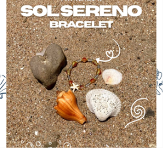
R30
We wanted to encapsulate the sun within a bracelet, hence the name of this piece, 'Sol Sereno', meaning serene sun in Portuguese.
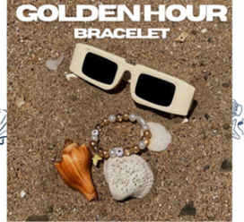
R30
This bracelet is inspired by an African summer, incorporating the colours of our sandy beaches, and clear, blue waters.
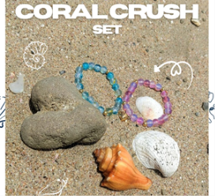
R50
This set contains two matching bracelets, connected by a heart magnet. Whether it's for your friend, sibling or even a family member, this makes the perfect gift for any occasion.
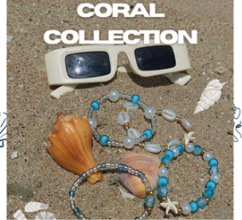
R120
This set contains four bracelets which embody summer and join together to create THE perfect summer stack!
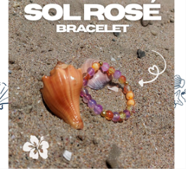
R30
This bracelet is inspired by the sunset which is incorporated through the shades of yellow, pink and orange in order to create a symphony of colours which represent a tropical sunset.
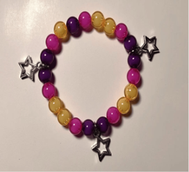
R30
A bracelet inspired by the colours of a beautiful sunset!
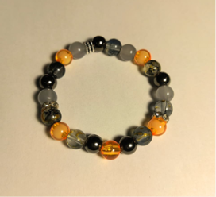
R35
This is truly a one of a kind bracelet and statement piece that speaks for itself. It'll truly be the main character in your stack!
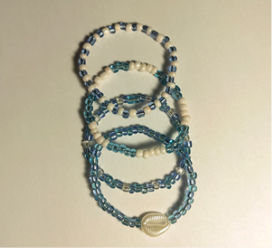
R120
This set is so dainty and elegant with the combination of soft blues and the use of seed beads. Definitely a favorite!
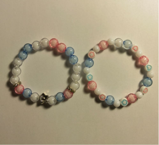
R50
This set is an adorable combination of beautiful pastel colours, pink, blue and white!
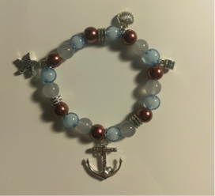
R35
This bracelet encapsulates the colours which surround a sunken shipwreck. Brown is symbolic of the wood the ship was built with, blue symbolizes the ocean and grey symbolizes the foam of the sea.
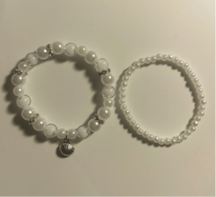
R50
This bracelet is inspired by the classiness and elegance of pearls. This was reflected in this set, while paying homage to the mothers of pearl and clams through the clam charm.
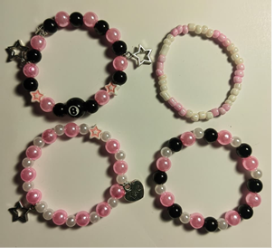
R120
This set features a variety of four unique designs which work in tandem to create a beautiful and super cute set!!
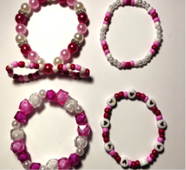
R120
This set of four bracelets is perfect for when you want to channel your inner girly girl, with shades of hot pink and white!
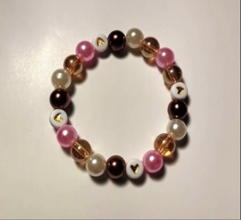
R30
A bracelet inspired by the adorable colours of a sweet treat.
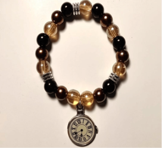
R35
A bracelet made to reflect the past and constantly fleeting time. These colours were used to give this piece a rustic feel and hopefully a look into the past.
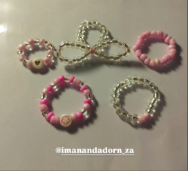
R55
Whether you call it a ribbon or a bow, you can't deny the cuteness a simple bow can bring. Each ring is specifically sized and fitted in order to adjust to the size of your rings. These are lightweight and add a nice touch to any outfit.
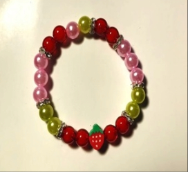
R30
This is an adorable bracelet inspired by the delicious strawberry matcha drink. It was inspired by trying matcha for the first time and it being absolutely delicious.
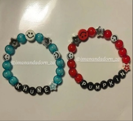
R30+
This is a customizable matching bracelet set, in which you can add yourself and someone else's name. The price varies, depending on the amount of letters the name you have chosen has.
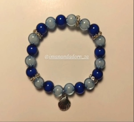
R30
This gorgeous bracelet is inspired by the foam and tide of the sea, with the lighter blue representing the gentle tide, while the darker blue represents the deep ocean.
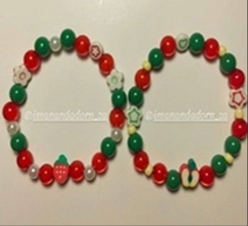
R50
This is an adorable set inspired by two delicious fruits, apples and strawberries. They are perfect and colourful bracelets, perfect for matching with a friend, or adding something sweet to your wrist.
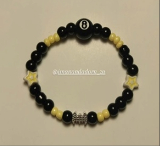
R30
Inspired by everyone's favorite and the superior superhero, Batman! This bracelet encapsulates the love for Batman into a cute and wearable bracelet. This bracelet is versatile and a perfect addition to any outfit.
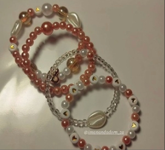
R120
This stackable set features 4 different and unique bracelets consisting of rose gold and pearl elements, creating a regal and elegant feel.
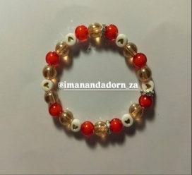
R30
This is a beautiful and versatile bracelet with tones of red, gold and white. The colours give it an elegant and regal feel, all while having a beautiful and classic design.
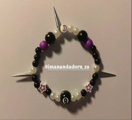
R30
A cute and simple bracelet with an edgy and grungy feel! This bracelet matches with any outfit, especially if you're wearing a dark ensemble. The purple beads add just the right pop of colour!
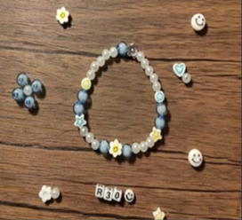
R30
Our Joyflower Bracelet is guaranteed to add a pop of colour to your life with the vibrant tones of yellows and blues, instantly creating a positive feeling. This is a comfortable and lightweight bracelet, perfect for the hot summer weather. Get this bracelet now, for only R30 while stocks last.
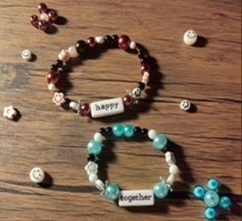
R50
Ever wanted to match with your friend but you're not really sure what you want your matching bracelets to say? Then these matching affirmation sets are perfect for you! Each set has a different combination of words which go in tandem with each other, so you can match with your loved one.